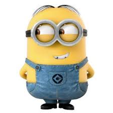

Abstract
My Favorite Restaurant
My Favorite Food
Dogs in My Family
Aquarium
Flip Cards

Julie Vu
GEOG328 Student
Lab 2 Submission
Contact
This is Julie Vu's lab 2 submission for GEOG328, where I convert my markdown wiki to a website.
The content on this website will display my favorite restaurant (in Fremont), my favorite food, and information about my dogs.
Here is the minion image in a scaled size:
Here is the minion image in its original size: